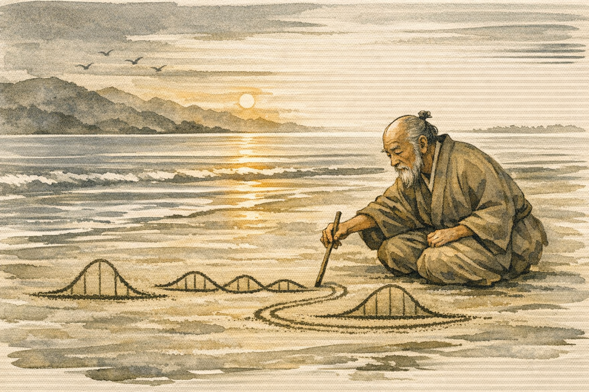

Distributions and Data Generating Processes
Before you fit a model, understand your data. Every distribution is a claim about how your data came to exist.

You have count data. Maybe it’s the number of customer support tickets received each hour, the number of errors logged per deployment, or the number of goals scored per match. A colleague runs a t-test on it. Another fits a linear regression. The outputs look plausible. The numbers are in a reasonable range. A p-value appears. Someone writes it up.
But something nags at you.
The problem isn’t the method - not exactly. It’s that nobody stopped to ask what kind of thing this data actually is. Counts can’t be negative. They’re integers. Their variance tends to grow with their mean. These aren’t statistical technicalities to be handled later with a footnote. They’re facts about reality that any honest model must respect from the start.
This post is about that moment - the moment before the model. The moment where the real work happens.
The Toolbox Metaphor
A distribution is not a curve you fit to data. It is a model of how your data came to exist.
When a carpenter reaches for a chisel rather than a saw, it isn’t because the chisel fits the wood better in some abstract aesthetic sense. It’s because the chisel is the right tool for the job being done - the specific cut, the specific material, the specific grain. The tool matches the task. Not the other way around.
Statistical distributions work the same way. The Normal distribution isn’t “the default” any more than a hammer is the default tool. It’s the right choice when your data arises from many small, independent additive effects - heights, measurement errors, exam scores averaged over large populations. It’s a poor choice when it doesn’t.
The toolbox is large. But picking from it is actually the fast part. What takes time, and what most curricula under-emphasise, is the work that comes before the picking. Understanding what you are building before you reach for a tool.
The Hard Part: Understanding Your Data
Before you open R, before you look at a histogram, before you run a single line of code, there are three questions worth sitting with.
What is this data, fundamentally?
Not “what does it look like” - what is it? Is it a duration? A count? A proportion? A continuous measurement that can take any real value? A binary outcome? The answer immediately rules out large portions of the toolbox. Proportions live between \(0\) and \(1\). Counts are non-negative integers. Durations are positive and continuous. These aren’t statistical assumptions you impose - they’re descriptions of reality that your model should already know.
A model that can predict \(-14\) customer support tickets, or a survival probability of \(1.3\), or a waiting time of \(-6\) minutes, is a model that has already parted ways with the phenomenon it claims to describe.
What process generated it?
This is the deeper question, and the more rewarding one. Data doesn’t just exist - it was created by something happening in the world. Ask what that something was.
A count of website visits per hour was generated by independent users arriving at some average rate. That’s a Poisson process. A conversion result from an A/B test was generated by some number of users each independently doing or not doing something. That’s a Binomial process. The time until the next server failure was generated by a process with no memory - the machine doesn’t know how long it’s been running. That’s Exponential.
When you can describe the generating process in plain language, the distribution tends to name itself. The formula is secondary. The story comes first.
What does the mean tell you - and what does the variance add?
The mean describes where your data tends to land. The variance describes how it spreads around that. But the relationship between the two is often the most diagnostic thing you can examine, and it’s a check that takes five minutes and gets skipped constantly.
In a Poisson process, \(\text{Var}(X) = \mu\) exactly, by construction. If you compute both from your count data and they’re in the same neighbourhood, that’s meaningful confirmation. If variance is far larger than the mean, you have overdispersion - your data has more spread than a simple Poisson process can account for, and a more flexible count model is likely needed. If variance is growing with the square of the mean, you’re in Gamma territory. If variance looks like \(\mu \cdot p \cdot (1-p) \cdot n\), you have Binomial structure.
Most analysts skip straight to fitting. The two-moment check often makes the right distribution obvious before any fitting happens at all.
A Worked Example: When Plausible Is Not Correct
Consider a software team tracking the number of bugs filed each day. At the end of a sprint, someone compares two periods with a t-test. The output looks reasonable - a test statistic, a p-value, a confidence interval. The report gets written.
But look at what the Normal model is silently assuming:
- That bug counts could, in principle, be negative. They cannot.
- That the variance is constant regardless of how many bugs are being filed. It isn’t - on high-volume days, counts are more spread out. Variance tracks the mean.
- That the outcome is continuous. It isn’t - you cannot file \(4.7\) bugs.
These aren’t minor violations. They are mismatches between the model’s assumptions and the structure of the data generating process. The confidence interval may extend below zero - a nonsensical bound that a Poisson model would never produce. The p-value is likely too small, because the Normal is underestimating variance in the right tail. The model is producing numbers, but the numbers are answering a question about data that doesn’t exist.
The Poisson model, by contrast, respects all three constraints by construction. Not because you bolted on corrections after the fact, but because it was built from the ground up to describe this kind of process - discrete, non-negative, \(\text{Var}(X) = \mu\). You don’t have to tell it that counts can’t be negative. It already knows.
The “But Large Counts Are Fine” Objection
At this point, an experienced analyst will often say: “If the counts are large enough, the Normal is a perfectly good approximation. We did it for years and it worked.”
This is worth taking seriously, because it is not always wrong. But it conflates two very different things.
The informed approximation looks like this: I know this data is Poisson. \(\lambda\) is large - two hundred events per day. The Normal approximation is tight in the centre of the distribution, the tails don’t matter much for this particular question, and I need a quick answer. I’ll use Normal here, consciously, knowing what I’m trading away. That is statistical judgment. It is defensible precisely because the analyst understands the data generating process and is making a deliberate choice.
The cargo-cult Normal looks like this: I read somewhere that Normal is fine for large samples. No further examination. The statement has been copied from online forums and textbook footnotes, passed along in methods sections and team wikis, each time losing a little more of the context that made it defensible in the first place. The original author may have been making the informed trade-off. Most readers after them are just copying the conclusion without the reasoning. The approximation becomes a thought-stopper - a licence not to ask the question at all.
The outputs of these two approaches can look identical. That is precisely what makes the second one dangerous.
And even the informed approximation carries costs worth naming. The Normal still assigns positive probability to negative counts - negligible for large \(\lambda\), but the model doesn’t know that. The structural mean-variance relationship that defines a Poisson process - \(\text{Var}(X) = \mu\), always - disappears entirely when you switch to Normal. You’ve freed variance to be whatever it wants, which means you’ve discarded a constraint that was doing real scientific work. Add predictors later, and the mean drops in some subgroups. The approximation that worked in the centre quietly falls apart at the edges, with no warning.
There is also a historical dimension worth understanding. The Normal dominated applied statistics for decades not because it was always the most appropriate model, but because it was mathematically convenient. Fitting a Poisson GLM once meant a mainframe, a statistics department, and a lot of patience. Log-transforming count data and running ordinary least squares was a forced trade-off - the best available option under real computational constraints.
That trade-off made sense in 1975. It doesn’t in 2026, when glm(y ~ x, family = poisson) is one line in R.
The barrier is gone. The habit stayed.
The Toolbox
Once you have thought carefully about what your data is and where it came from, the choice of distribution usually follows naturally. Here are the eight most commonly needed, framed not by their mathematical properties but by the story each one tells about the data generating process.
| Distribution | The story it tells |
|---|---|
| Normal | Many small independent effects added together. Heights, errors, averages of large samples. The Central Limit Theorem at work. |
| Logistic | The log-odds of a binary outcome. Its CDF is the sigmoid function - not just sigmoid-shaped, but the exact function \(\frac{1}{1+e^{-x}}\) that logistic regression applies to every prediction. |
| Exponential | Time until the first event in a memoryless Poisson process. The machine has no history - it does not know how long it has been running, and that ignorance is the model. |
| Binomial | How many successes in \(n\) independent yes/no trials? The backbone of A/B testing and anything involving counted outcomes out of a fixed total. |
| Poisson | How many events arrived in a fixed window, when they occur at a constant average rate \(\lambda\) and independently of each other? |
| Student’s t | Like Normal, but you don’t know \(\sigma\) and your sample is small. The extra uncertainty lives in the heavier tails. At \(\nu = 1\) it becomes the Cauchy - so heavy-tailed that even the mean is undefined. |
| Gamma | Positive, continuous, right-skewed data where \(\text{Var}(X)\) scales with the mean. Biomass, precipitation, concentrations. A generalisation of the Exponential. |
| Beta | What is the probability itself? The only standard distribution that lives entirely on \([0, 1]\) - the natural home for proportions, rates, and Bayesian priors on probabilities. |
A Family Worth Understanding
Three of these distributions are not independent entries in the toolbox. They are three windows onto the same underlying process - and seeing their relationship is one of the most useful things you can take from this post.
In a Poisson process, events arrive independently at a constant rate \(\lambda\). You can ask three different questions about that process, and each one leads to a different distribution:
- How many events arrived in a fixed window? \(\rightarrow\) Poisson
- How long until the first event? \(\rightarrow\) Exponential
- How long until the \(k\)-th event - the total waiting time starting from now? \(\rightarrow\) Gamma
The Exponential and Gamma are directly connected. Each gap between consecutive events is an independent \(\text{Exp}(\lambda)\) wait. Stack \(k\) of those gaps on top of each other - add up \(k\) independent waiting times - and the total follows a \(\text{Gamma}(k, \lambda)\). The Exponential is simply the special case where \(k = 1\).
\[ \underbrace{ \overbrace{t_1}^{\text{Exp}(\lambda)} + \overbrace{t_2}^{\text{Exp}(\lambda)} + \overbrace{t_3}^{\text{Exp}(\lambda)} }_{\text{Gamma}(3,\, \lambda)} \]
The Exponential is memoryless: \(P(X > s + t \mid X > s) = P(X > t)\), meaning that if you have already been waiting \(s\) minutes and nothing has happened, your expected remaining wait is identical to what it was when you started. The past is irrelevant. A machine that has been running for 10 years has exactly the same probability of failing tomorrow as a brand new one. When that assumption holds, the Exponential is the right model. The Gamma, by contrast, accumulates \(k\) waiting periods - it has history, which is why it develops a hump rather than simply decaying from the left, making it more appropriate when wear or accumulation is part of the story, as it is in most biological and mechanical processes.
When the shape parameter \(\alpha\) is a positive integer, this stacking interpretation is exact. When \(\alpha\) is continuous - as it almost always is in practice, when you fit a Gamma to biological data like biomass or precipitation - the counting story no longer holds literally. A fitted \(\alpha = 2.7\) does not mean you are waiting for \(2.7\) events. It means your data has the particular skewness and mean-variance structure that sits between “waiting for 2” and “waiting for 3.” The math generalises smoothly even when the story doesn’t. And that generalisation is what makes the Gamma so flexible and useful for the kind of positive, right-skewed continuous data that appears throughout biology, ecology, and environmental science.
If you understand the Poisson process, in other words, you get three distributions for the price of one. The toolbox is not a list. It is a set of related ideas, and understanding the relationships is part of understanding the tools.
You can explore all eight interactively - adjust the parameters, watch the shapes change in real time, and see exactly how \(\mu\) and \(\sigma^2\) relate for each one - in the distribution explorer here.
The Philosophy, One More Time
Each distribution encodes a claim about how the world works. The Normal says: this quantity arose from many small additive effects. The Poisson says: these events occur independently at a constant rate. The Beta says: this value is itself a probability, bounded and continuous on \([0, 1]\).
When you pick a distribution without asking what generated your data, you are still making that claim - you’ve just made it unconsciously. The model doesn’t know you weren’t thinking about it. It will proceed to estimate, predict, and report confidence intervals based on assumptions you never examined.
When you understand your data generating process well enough to answer three questions - what values can my data take, what is its mean \(\mu\), and how does its variance \(\sigma^2\) behave - you have identified the constraints your distribution must respect. The good news is you don’t need to derive anything from scratch. Statisticians and mathematicians have already done that work. The common distributions we reach for - Normal, Poisson, Gamma, Beta and the rest - are precisely the distributions that have been proven to be the most conservative for their specific constraints. They assume nothing beyond what those constraints require. Your job is to identify the constraints. The right distribution follows from that.
This idea has a formal name - the principle of maximum entropy, developed by E.T. Jaynes and made accessible for working scientists by Richard McElreath in Statistical Rethinking - but you don’t need the mathematics to use it. The intuition is enough: among all distributions consistent with what you know, the right one is the most conservative. The one that could have been produced in the most ways. The one that encodes your knowledge and then stops.
The discipline this post is arguing for is not complicated. It doesn’t require new software or new mathematics. It just requires slowing down long enough to ask: what is this data, really, and what process put it here?
The distribution will suggest itself. The toolbox is large, but once you know what you’re building, most of it stops being relevant. You reach for the right tool not because it fits - but because it’s correct.
And correct, in statistics as in carpentry, is not the same thing as close enough.
If you want to explore the distributions mentioned in this post - their shapes, their parameters, their R functions - the interactive reference is available on the Tools page.
Citation
@online{schreiber2026,
author = {Schreiber, Stefan},
title = {Distributions and {Data} {Generating} {Processes}},
date = {2026-05-08},
url = {https://envirostats.ca/posts/2026-05-09-distributions-and-data-generating-processes/},
langid = {en}
}